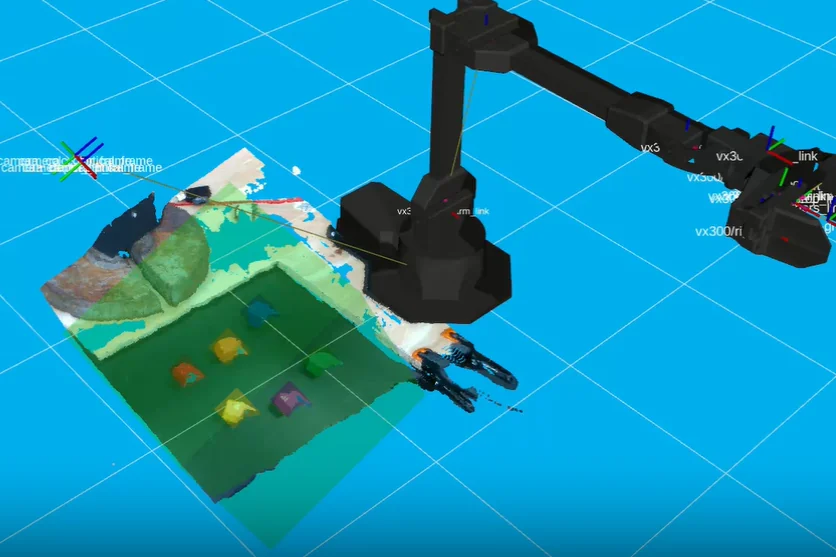
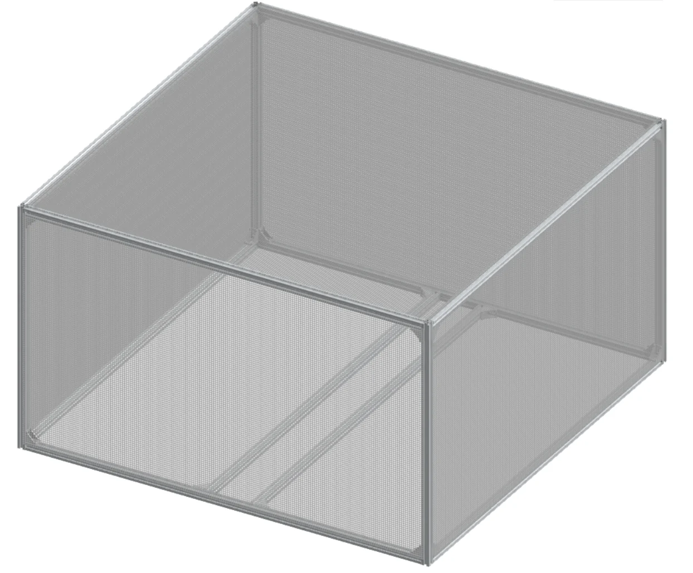
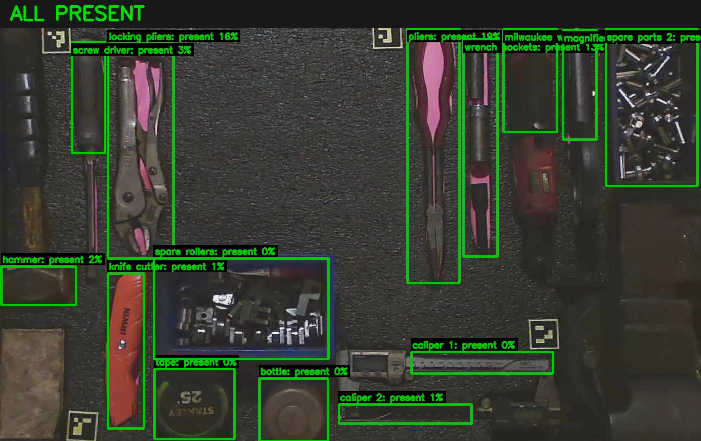
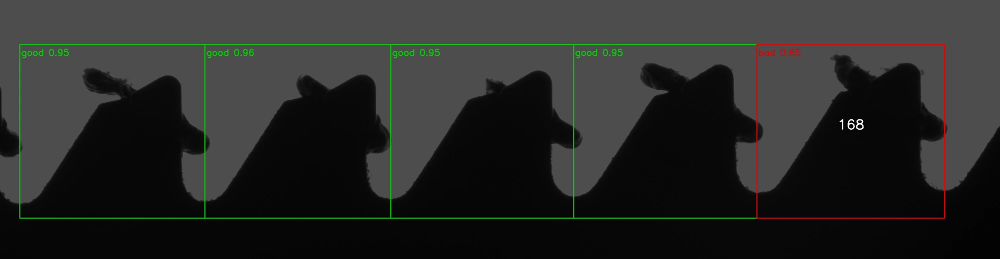

Teaching a robot
where to reach.
A visual sensor based pick-and-place system combining depth perception, object detection, and robot control.
ROS 2 · YOLOv11 · RealSense · Python
Read the case studyI’m Taha. I connect computer vision, robotics, and physical systems to turn observations into useful action.
Explore selected workBS Computer Engineering, expected 2027
Minors in Computer Science and Robotics & Automation

01 / Selected work
A closer look at the systems, decisions, and experiments behind my engineering work.
A visual sensor based pick-and-place system combining depth perception, object detection, and robot control.
ROS 2 · YOLOv11 · RealSense · Python
Read the case study
CAD / design studyDeveloping a pre-flight UAV diagnostic workflow using acoustic signals, vibration sensing, and vehicle telemetry.
MAVLink · Python · Sensor integration · CAD
Explore the ongoing work
A camera based monitoring prototype that locates a tool board and turns missing tools into visual annotations and timestamped logs.
ArUco · Perspective correction · Color segmentation
See how it works
Development pipelineCombining controlled imaging, learned classification, and geometric edge fitting to inspect reciprocating blade teeth.
YOLO · Canny · RANSAC · Gage R&R
Read the technical overview02 / About
I’m a computer engineering student at the University of Cincinnati, interested in how machines perceive, measure, and interact with their surroundings.
My work spans research and applied engineering: depth-guided manipulation, camera based inspection, and the integration of sensors with physical test systems.
I’m drawn to problems where the software has to account for real geometry, imperfect measurements, and the constraints of hardware.
Computer vision
Object detection
Image geometry
Python & ROS 2
Sensor integration
Vehicle telemetry
Robotic systems
Test fixtures & CAD
Inspection workflows
03 / Research
Taha Momayiz and Andrew Barth
Read the publication (opens in a new tab)Taha Momayiz, Lucas Whitmer, Roan Kirwin, and C. S. Rakurty
View the related project04 / Connect
Interested in robotics, computer vision, or engineering systems? Explore my code on GitHub or connect with me on LinkedIn.